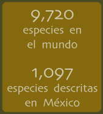

|  |
Se estiman entre 9,000 y (Burnie, 2003) a 9,720 especies de aves en el mundo (Dickinson, 2003). Las aves mexicanas son un grupo particularmente importante ya que nuestro país ocupa el 8vo.
lugar mundial en cuanto a número de especies (según los autores 1,100 aproximadamente), pues se presenta una mezcla de avifauna de origen neártico y neotropical, así como un número
importante de endemismos (más de 100 del total de especies mexicanas, lo que equivale a un 9% aproximado). Las aves se clasifican en 29 órdenes, de los cuales 22 están presentes en
México. |
 Aves en peligro de extinción
Aves en peligro de extinción